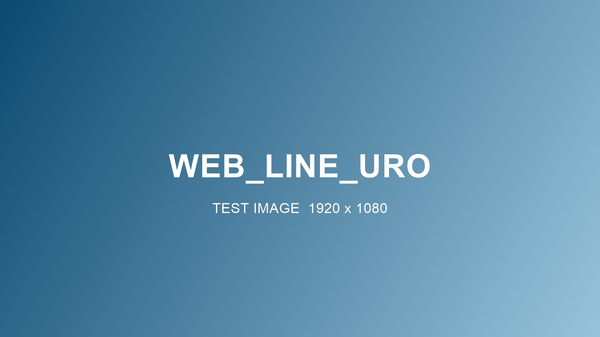

Home / What We Supply / Urology Supplies
Urology Supplies · URO
Urological supplies on schedule, without the awkwardness
Catheter supplies are personal. We treat them that way: discreet packaging, reliable refill timing and coverage verification that makes sure you receive the full quantity your plan allows.
New at Prism: Urology Supplies is our newest product line, built on the same verified-coverage, scheduled-resupply system as everything we carry.

What We Supply
The urology supplies catalog
- Intermittent, hydrophilic and closed-system catheters
- External catheters and drainage bags
- Irrigation and insertion supplies
- Pediatric sizes and specialty options by order
How It Works
Two sides of the same order
If you're a patient
Medicare covers up to 200 intermittent catheters per month when prescribed. Many people receive far fewer than they're entitled to. We verify your benefit and ship your full allowable quantity, discreetly, every month.
If you're a provider
Send the order with supporting documentation; we handle eligibility, quantity verification and monthly resupply so patients aren't rationing sterile supplies between visits.
Common Questions
Urology Supplies FAQ
How many catheters am I entitled to?
Medicare typically covers up to 200 single-use intermittent catheters per month when prescribed. We verify your specific benefit and make sure you receive your full quantity.
Can I try a different catheter type?
Yes. With your clinician's updated order we can switch systems on your next shipment. Comfort matters; don't settle for one that doesn't work for you.
Is packaging discreet?
Yes. All urological supplies ship in plain, unmarked packaging.
Ready When You Are
Start with urology supplies today.
One call verifies your coverage and gets your first order moving.